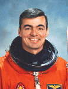

Lyndon B. Johnson Space Center
Houston, Texas 77058
|
National Aeronautics and Space Administration Lyndon B. Johnson Space Center Houston, Texas 77058 |
 |
Biographical Data |
||
ANDREW M. ALLEN (LIEUTENANT COLONEL, USMC, RET.)
NASA ASTRONAUT (FORMER)
PERSONAL DATA: Born August 4, 1955, in Philadelphia, Pennsylvania. Four children. Enjoys woodworking, racquetball, weight lifting, and bicycling. His father, Charles A. Allen, resides in Titusville, Florida. His mother, Loretta T. Allen, is deceased.
EDUCATION: Graduated from Archbishop Wood High School, Warminster, Pennsylvania, in 1973; received a bachelor of science degree in mechanical engineering from Villanova University in 1977. He has also received a Masters in Business Administration from the University of Florida in 2004.
ORGANIZATIONS: Society of Experimental Test Pilots, Association of Space Explorers. Member the Advisory Board for the University of Florida Business School.
SPECIAL HONORS: Defense Superior Service Medal; Legion of Merit, Distinguished Flying Cross; Defense Meritorious Service Medal; Single Mission Air Medal; NASA Outstanding Leadership Medal; NASA Exceptional Service Medal; NASA Space Flight Medal; Honorary Doctorate of Public Service from Bucks County Community College (1993); Honorary Doctorate of Engineering Science from Villanova University (1997); Honorary Doctorate of Science from Daniel Webster College (1998).
EXPERIENCE: Allen was a member of the Navy ROTC unit and received his commission in the United States Marine Corps at Villanova University in 1977. Following graduation from flight school, he flew F-4 Phantoms from 1980 to 1983 with VMFA-312 at Marine Corps Air Station (MCAS) Beaufort, South Carolina, and was assigned as the Aircraft Maintenance Officer. He was selected by Headquarters Marine Corps for fleet introduction of the F/A-18 Hornet, and was assigned to VMFA-531 in MCAS El Toro, California, from 1983 to 1986. During his stay in VMFA-531, he was assigned as the squadron Operations Officer, and also attended and graduated from the Marine Weapons & Tactics Instructor Course, and the Naval Fighter Weapons School (Top Gun). A 1987 graduate of the United States Navy Test Pilot School at Patuxent River, Maryland, he was a test pilot under instruction when advised of his selection to the astronaut program.
He has logged over 6,000 flight hours in more than 30 different aircraft.
NASA EXPERIENCE: Selected by NASA in June 1987, Allen became an astronaut in August 1988. His technical assignments have included: Astronaut Office representative for all Space Shuttle issues related to landing sites, landing and deceleration hardware, including improvements to nosewheel steering, brakes and tires, and drag chute design; Shuttle Avionics Integration Laboratory (SAIL), which oversees, checks, and verifies all Shuttle flight control software and avionics programs; Technical Assistant to the Flight Crew Operations Director who is responsible for and manages all flight crew operations and support; lead of the Astronaut Support Personnel team which oversee Shuttle test, checkout, and preparation at Kennedy Space Center; Special Assistant to the Director of the Johnson Space Center in Houston, Texas; lead of a Functional Workforce Review at the Kennedy Space Center, Florida, to determine minimal workforce and management structure requirements which allow maximum budget reductions while safely continuing Shuttle Flight Operations; Director of Space Station Requirements at NASA Headquarters, responsible for the International Space Station requirements, policies, external communications and liaison with Congress, international partners, and industry. A veteran of three space flights, Allen has logged over 900 hours in space. He was the pilot on STS-46 in 1992 and STS-62 in 1994, and was mission commander on STS-75 in 1996.
Allen retired from the Marine Corps and left NASA in October 1997. He has since served in various industry leadership positions including President of the FIRST (For Inspiration and Recognition of Science and Technology) Foundation, Associate Program Manager for Ground Operations with United Space Alliance, and is currently a Vice President and Program Manager with Honeywell.
SPACE FLIGHT EXPERIENCE: STS-46 was an 8-day mission aboard Space Shuttle Atlantis which featured the deployment of the European Retrievable Carrier (EURECA), an ESA-sponsored free-flying science platform, and demonstrated the Tethered Satellite System (TSS), a joint project between NASA and the Italian Space Agency. STS-46 launched July 31, 1992, and landed at the Kennedy Space Center, Florida, on August 8, 1992. The flight completed 126 orbits covering 3.3 million miles in 191.3 hours.
STS-62, a 14-day mission aboard Space Shuttle Columbia consisted of 5 crewmembers that conducted a broad range of science and technology experiments with Earth applications to materials processing, biotechnology, advanced technology, and environmental monitoring. Principal payloads of the mission were the United States Microgravity Payload 2 (USMP-2) and the Office of Aeronautics and Space Technology 2 (OAST-2) package. STS-62 launched March 4, 1994 and landed at the Kennedy Space Center, Florida, on March 18, 1994. The flight completed 224 orbits covering 5.8 million miles in 335.3 hours.
STS-75 (February 22 to March 9, 1996) was a 16-day mission with principal payloads being the reflight of the Tethered Satellite System (TSS) and the third flight of the United States Microgravity Payload (USMP-3). The TSS successfully demonstrated the ability of tethers to produce electricity. The TSS experiment produced a wealth of new information on the electrodynamics of tethers and plasma physics before the tether broke at 19.7 km, just shy of the 20.7 km goal. The crew also worked around the clock performing combustion experiments and research related to USMP-3 microgravity investigations used to improve production of medicines, metal alloys, and semiconductors. The mission was completed in 252 orbits covering 6.5 million miles in 377 hours and 40 minutes.
SEPTEMBER 2004
This is the only version available from NASA. Updates must be sought direct from the above named individual.
{kind=link}